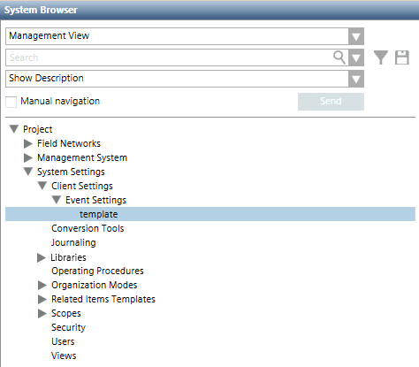
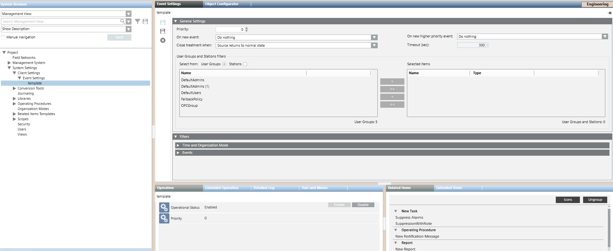
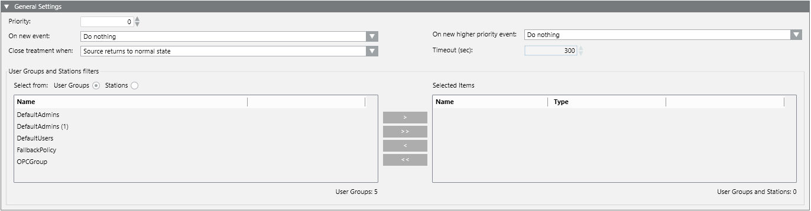

Event Settings Workspace
Event settings rules are located under Project > System Settings > Client Settings > Event Settings in the Management View of System Browser.

In Engineering mode, when you select the main Event Settings folder or a rule under it, the Event Settings tab displays.

General Settings of an Event Settings Rule
When you configure an event settings rule, the General Settings expander lets you specify the automated actions that will happen when this rule applies.

Priority. If an event occurs that matches the filter of more than one automated rule, the priority (where 0 is the highest and increasing numbers denote decreasing priority) determines which rule will run. You cannot assign the same priority to two rules.
On new event. The automated event handling actions the system will execute when an event occurs that matches the filters of this rule:
- Do nothing: The operator must manually initiate handling of the event.
- Open Event List: Event List opens automatically.
- Start Fast Treatment: Event List opens automatically, with the event already selected.
- Start Investigative Treatment: The Investigative Treatment window for the event opens automatically.
- Start Assisted Treatment: If available (that is, if an operating procedure was configured), the Assisted Treatment window for the event opens automatically only on the first Desigo CC station that handles the event. Instead, the Investigative Treatment window opens automatically on the other Desigo CC stations configured for this rule.
On new higher priority event. During automated handling of an event, this determines what happens if a new event comes in that matches a higher-priority rule:
- Do nothing: Event handling of the current event will continue.
- Switch to the new event: Event handling of the current event is automatically suspended, and event handling of the new higher-priority event automatically starts.
- Ask the user whether to switch: A message box asks the operator whether to continue handling the current event or start handling the new higher-priority event instead.
Close treatment when. Sets when you want the system to automatically suspend handling of the event. This means that the event is deselected in Event List, and any Assisted/Investigative Treatment windows are closed. However, the event remains available in Event List.
- Source returns to normal state: Suspend event handling when event source is back to
Quiet. - Upon user request: Suspend event handling only when the operator manually deselects the event.
- Event is acknowledged: Suspend event handling when the acknowledge command is sent.
- Event is reset: Suspend event handling when the reset command is sent.
- Event is closed: Suspend event handling when the event status is
Closed. The event will then be removed from the list. - After a timeout: Suspend event handling after a specific interval of time (default 300 seconds). Selecting this option activates the Timeout (sec) field where you can enter the timeout. The countdown will start from when the event appears in Event List.
User Groups and Stations filters: This lets you restrict the rule so that it applies only to the groups of users and/or stations in the Selected Items list on the right.
- Select the User Groups or Stations radio button to display a list of the corresponding items in the list bottom left. Then move items to the Selected Items list or vice versa by double-clicking them, or by using the arrow buttons.
- If you do not set any user group or station filters, the current rule will apply throughout the system, to all user groups and stations.
- If you select multiple user groups/stations, an OR logic will be followed. That is, the current rule will apply only to the user groups/stations selected in the list.

User groups and stations filters do not have any effect on which automated rule should run as this depends on the filters defined in the Filters expander.
Filters of an Event Settings Rule
You use filters to configure when, in what circumstances, and for what combination of event conditions an event settings rule will run.

When you configure an event settings rule, the Filters expander lets you set the following:
- Time and Organization Mode. This defines a set of time-dependent preconditions for the event settings rule (for example, only if it is a weekend, and the building is unoccupied). For details, see Time and Organization Mode Conditions. Each condition occupies one row and at least one row must be true (OR logic between rows) to assert the time-dependent conditions trigger.
- Events. This defines the event or combination of events (for example, an alarm in a critical area) that will trigger the event settings rule. For details, see Events Conditions. Each condition occupies one row and at least one row must be true (OR logic between rows) to assert the events trigger.
An AND logic is applied between the filters: time-dependent and events conditions must both be asserted (true) for the event settings rule to run.
If an event occurs that matches the filters of more than one rule, the one with the higher priority (lower number), as specified in the General Settings expander, will run.
If you do not set any filters for the event settings rule, the rule will run for all the events generated in the system.
Event Settings Toolbar Controls
| Selection in System Browser [Engineering mode] | |
Event Settings rule object | Event Settings folder | |
Save | Save the changes made to the current event settings rule. | n.a. |
Save As | Save the currently selected event settings rule with a different name. You can use this to create a new event settings rule from an existing one. | Create a new event settings rule object. |
Delete | Delete the currently selected event settings rule. | n.a. |